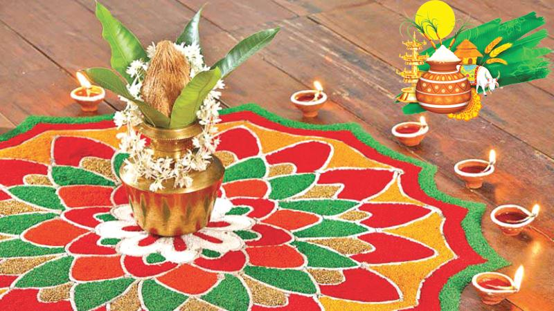
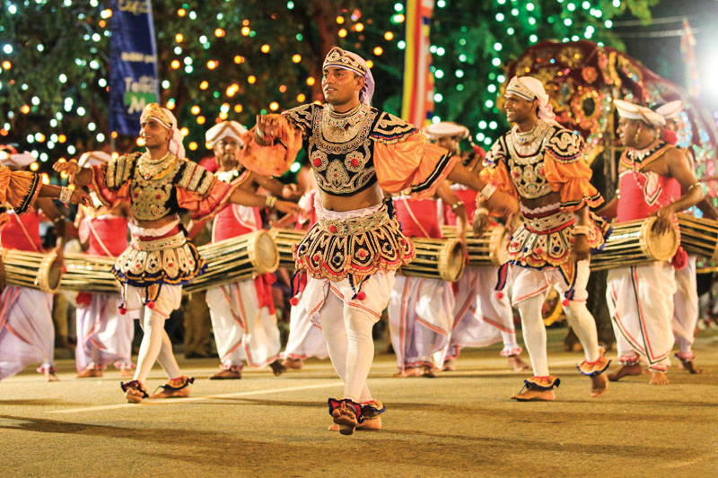
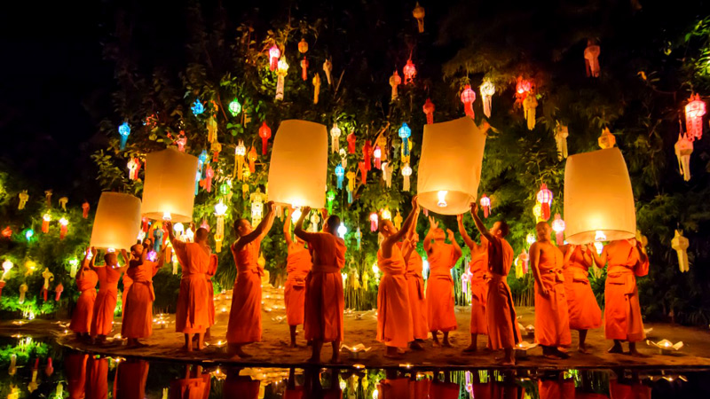

01.Duruthu Perahera
At this historic temple a procession known as “the Duruthu Perahera” is held on the pre-full moon poya day of the month of Duruthu (January) every year.

02.Thaipongal Festival
The tradition and custom of celebrating Pongal in Sri Lanka is same that of Tamils in India. this festival is also known as the First rice festival

03.Nawam Perahera
In 1979, the first Navam Perahera took place at the Gangaramaya temple in Colombo. This perahera has grown to become one of the most popular and important pageants in Sri Lanka.
04.Sinhala and Tamil New Year
In Sri Lanka, new year celebrations start on 13th of April and end in 14th of the month. Sinhala and Tamil New Year.

05.Vesak Festival
The Wesak Festival, celebrated at the Taurus Full Moon, is said to be the day of greatest spiritual opportunity in the year.
06.Poson Festival
Poson, also known as Poson Poya, is an annual festival held by Sri Lankan Buddhists celebrating the arrival of Buddhism in Sri Lanka in the 3rd century BC.
07.Asala Festival
The Kandy Esala Perahera (The Sri Dalada Perahara procession of Kandy) also known as The Festival of the Tooth is a festival held in July and August in Kandy, Sri Lanka.
08.Maha Shiva Rathri Festival
Maha Shivaratri is a Hindu festival celebrated annually in honour of the god Shiva. The name also refers to the night when Lord Shiva performs the heavenly dance.09.Deepavali Festival
Deepavali the festival of light. The Indian Festival of Lights is the most widely celebrated festival of the people from the Indian sub-continent and across the whole world.10.Ramadan Festival
Ramadan brings out a special feeling of emotional excitement and religious zeal among Muslims of all ages. It is one of the holiest months for Muslims.
11.Christmas
Christmas is a great summer festival in Brazil, including picnics, fireworks, and other festivities as well as a solemn procession of priests to the church to celebrate midnight mass.